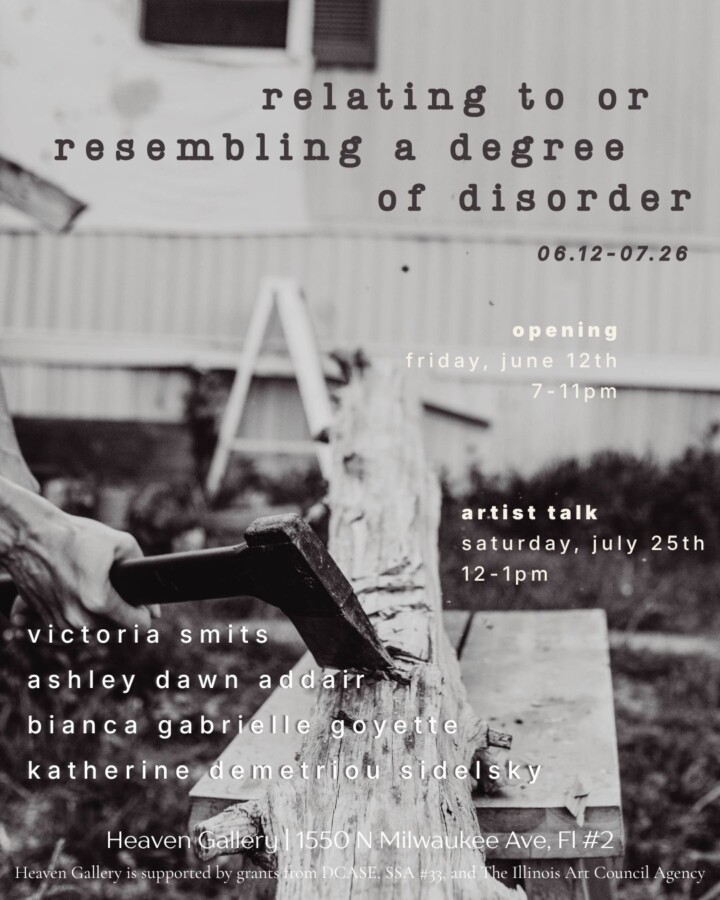

Relating to or Resembling a Degree of Disorder
‘The air we breathe is no simple being.’ — Antoine Lavoisier
relating to or resembling a degree of disorder designates anti-structure as ontological determination; it is exergonic — light liberated from its frame. The convergence of this work in this exhibition, at this moment, becomes an act of transience, of echoes among parts at a particular time; it reverses the abstraction of the self as ideology in lieu of a quest for absorption, compressed into a truth: we are I am. We exist and speak in parafictive time, resonating as soundwaves — forming a mnemonic device, an atom, a whole.
relating to houses the correlational web of work by four artists: Ashley Addair, bianca gabrielle goyette, Katherine Demetriou Sidelsky, and Victoria Smits — artists in various stages of life, from diverse socioeconomic backgrounds, racial structures, and lived experience, who, in 2020, uprooted their lives to prospect a form without form, absent of hierarchies, systems of control and categories, and instead generate conscious relation.
The collective work mines perceived disconnect into a new cognition. Correspondence in the form of letters, voice notes, discourse, Zoom ruminations, and dialogic exchanges circled a making within the and/both. These became a shared, novel verity — of construction, deconstruction, durational processes, and marks made in immediacy. Distinct elements from each artist “form a matrix… as a new entity, a creative dynamic… a new cultural form as revolt.”
relating to gathers uncodified passive memory and funnels it through a nexus. It asks, what do we see, what do we hear, what do we feel amid raw discordant experience? What relation emerges as we listen and be through time? What happens when we know community instead of boundary, when the self dissipates and a new inviolate universe becomes our air?